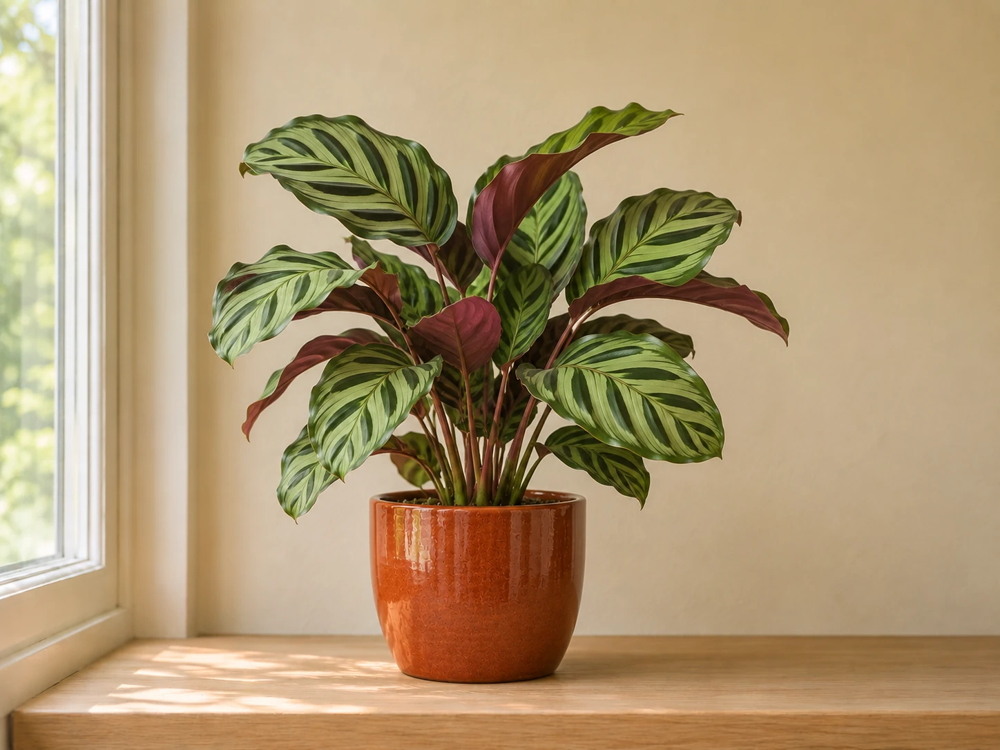

Stripes
Calathea makoyana
The tank needs refilling.
Same product, same plants, same copy. Each direction shows Home (four plants, one needs you, one silent) and the detail of a plant that's doing fine. Photos are the six generated for the 2026-11-17 canvas.
Direction A is the approved "Glazed Ceramic" direction, refined with what research and the audit found. B and C are real alternatives, not variations.
The care card that comes with a good ceramic pot. Paper, ink, your own photo, one sentence per plant. Colour only when something needs you.



A gardener's notebook. Each plant is an entry with a specimen plate, its Latin name in italic and a dated log. Rules, not cards. Editorial serif throughout.
A calm instrument panel for the module. Numbers first: soil, water and battery on every plant, tabular figures, one water-blue accent, sans only.